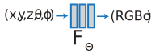
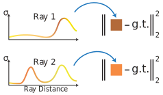

2 NeRF
Métodos
2.1 Abstract
2.2 Explanation
El método NerF (Neural Radiance Fields) es una técnica de inteligencia artificial que permite generar vistas sintéticas de escenas complejas en 3D. Para ello, utiliza una red neuronal que modela la radiación de luz a través de la escena y que puede ser entrenada con un conjunto de datos de imágenes y posiciones de cámara. En esencia, esta técnica crea un modelo 3D de la escena, que puede ser renderizado desde cualquier punto de vista. El método NerF ha demostrado ser altamente efectivo en la síntesis de vistas realistas de escenas complejas, como paisajes naturales o interiores detallados. Si quieres profundizar en el tema, puedes revisar el paper “NeRF: Representing Scenes as Neural Radiance Fields for View Synthesis” Mildenhall et al. (2020) .
En el trabajo de Mildenhall et al. (2020) sintetizaron las vistas consultando las coordenadas 5D a lo largo de los rayos de la cámara y utilizaron técnicas clásicas de renderizado de volúmenes para proyectar los colores y densidades de salida en una imagen. Dado que el renderizado de volúmenes es naturalmente diferenciable, la única entrada necesaria para optimizar esta representación es un conjunto de imágenes con poses de cámara conocidas. Describieron cómo optimizar eficazmente los campos de radiancia neuronales para representar nuevas vistas fotorrealistas de escenas con geometría y apariencia complicadas, y demostraron resultados que superan trabajos anteriores sobre representación neuronal y síntesis de vistas. Fuente: Project Page
2.2.1 Entrada
En primer lugar, se deben tener en cuenta las imágenes de referencia de la escena, junto con la información de la posición de cámara correspondiente a cada imagen. A partir de estos datos, se entrena una red neuronal para que pueda predecir la radiación de luz en cualquier punto de la escena.

Se sintetiza las vistas consultando las coordenadas continua 5D (ubicación espacial (x, y, z) y dirección de visión (\theta, \phi)) a lo largo de los rayos de la cámara y utilizaron técnicas clásicas de renderizado de volúmenes para proyectar los colores y densidades de salida en una imagen.
2.2.2 Entrenamiento
En esta etapa utiliza una red neuronal que modela la radiación de luz a través de la escena, y que puede ser entrenada a partir de un conjunto de datos de imágenes y posiciones de cámara. En esencia, esta técnica crea un modelo 3D de la escena
Para ello, se divide la escena en pequeños fragmentos, y se ajusta un modelo de radiación de luz a cada uno de ellos. Este modelo permite predecir la radiación de luz que se observaría en cualquier punto de la escena, a partir de una posición de cámara dada.


La salida es la densidad de volumen y la radiación emitida dependiente de la vista en esa ubicación espacial.
2.2.3 Renderizado
Una vez que se ha entrenado la red neuronal, se puede utilizar para generar vistas sintéticas de la escena. Para ello, se selecciona una posición de cámara arbitraria, y se utiliza la red neuronal para predecir la radiación de luz en cada punto de la escena, a partir de esta posición de cámara. A continuación, se renderiza la vista sintética correspondiente a la posición de cámara seleccionada, utilizando la información de radiación de luz predicha por la red neuronal.
El método NerF ha demostrado ser altamente efectivo en la síntesis de vistas realistas de escenas complejas, como paisajes naturales o interiores detallados.
2.3 Experimentation
2.4 Postprocess
Los software de edición de modelado 3D normalmente trabajan con renderizado de malla y este tipo de modelos retornan resultados denominados rendereización volumétrica, entonces al hoy (22-10-2023) es posible de realizar con técnicas de Cube Maching pero perdiendo mucha calidad.